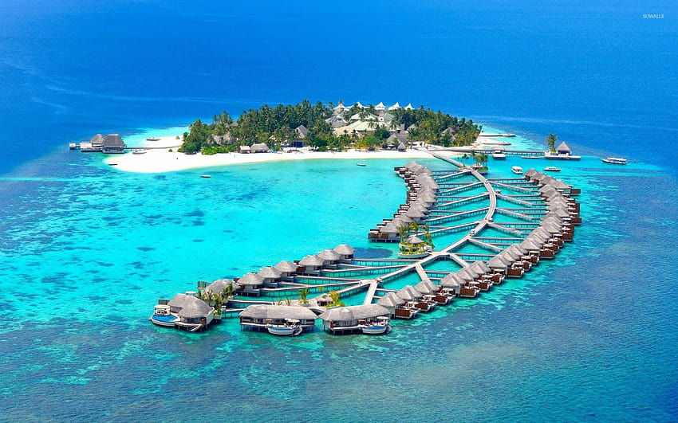
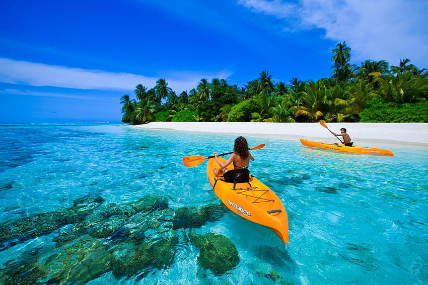
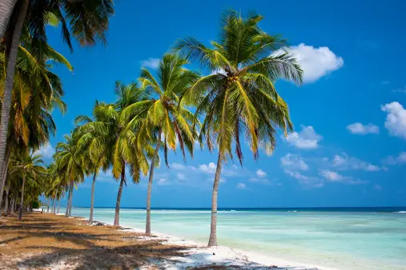
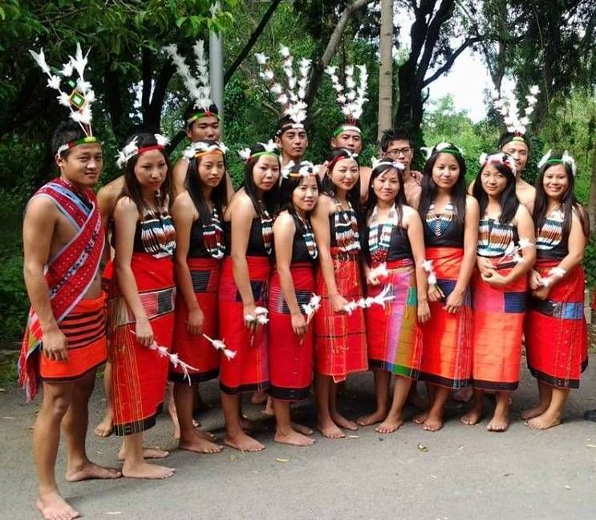
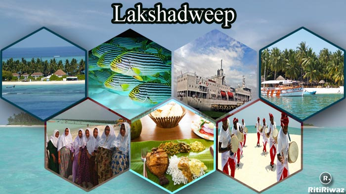

| ✧ Aspect | Information |
|---|---|
| ✧ Capital | Kavaratti |
| ✧ Chief minister | not have a Chief Minister |
| ✧ Largest City | Kavaratti |
| ✧ Islands | 10 inhabited islands. |
| ✧ Official Language | Malayalam |
| ✧ Other Language | English |
| ✧ Population | Approximately 70,000 people. |
| ✧ Area | Approximately 32 square kilometers |
| ✧ Major Rivers | not have major rivers |
| ✧ Major Industries | Fishing and tourism are the primary industries in Lakshadweep. Coconut cultivation and coir industry also contribute to the economy. |
| ✧ Popular Place | Minicoy Island, Agatti Islands, Bangaram Island, Scuba Diving in Lakshadweep, Kavaratti Islands, Kalpeni Island |
In Lakshadweep, the traditional dress for women is known as "Kachi" or "Chatta," which consists of a long, flowing skirt called "Mundu" paired with a blouse called "Choli." The Mundu is typically woven from cotton or silk and features vibrant colors and intricate designs.
The history of Lakshadweep is deeply intertwined with its geographical and cultural significance. Originally inhabited by indigenous people, the islands of Lakshadweep have witnessed waves of migration and trade interactions dating back centuries. Early records indicate that the islands were visited by Arab sailors and traders as early as the 7th century. These interactions brought Islam to the islands, shaping the cultural fabric of the region.
During the medieval period, Lakshadweep came under the influence of various South Indian kingdoms, including the Cholas and the Kolathiris. The islands served as important trading outposts for spices, coconuts, and other commodities, connecting the Indian subcontinent with the Middle East and beyond.
In the 16th century, Lakshadweep fell under the control of the Portuguese, who established control over the region as part of their maritime empire. However, their dominance was short-lived as they were soon supplanted by the rulers of the Malabar coast, particularly the Arakkal Kingdom.
By the 18th century, Lakshadweep came under the suzerainty of the British East India Company, further solidifying its ties with the Indian subcontinent. The islands remained relatively isolated and undeveloped during British rule, primarily serving as fishing grounds and coir production centers.
After India gained independence in 1947, Lakshadweep became a union territory in 1956. Since then, efforts have been made to modernize the islands while preserving their unique culture and fragile ecosystem. The construction of airstrips, harbor facilities, and other infrastructure has facilitated greater connectivity and economic development, particularly in the areas of tourism and fisheries.
Today, Lakshadweep stands as a symbol of India's maritime heritage and ecological diversity, attracting visitors from around the world with its pristine beaches, vibrant marine life, and rich cultural traditions. Despite facing challenges such as climate change and sustainable development, the islands continue to thrive as a testament to the resilience of their people and the beauty of their natural surroundings.




